FNGS
A One-Click Pipeline for the Automated Acquisition of Functional MRI Connectomes
Created by Eric Bridgeford, Tanay Agarwal, Eric Walker / Contact: @ebridge2

Summary of Methods: $^* = $ custom
| Step | FNGS | CPAC | fmriprep |
|---|---|---|---|
| Motion correct | mcflirt (FSL) | Opt/3dvolreg (AFNI) | mcflirt$^*$ (FSL; ANTs) |
| Slicetime correct | slicetimer (FSL) | CPAC $^*$ | 3dTshift (AFNI) |
| segment | FAST (FSL) | Option/FAST (FSL) | freesurfer$^*$ |
| self-register | epireg $^*$ (FSL) | Option/FLIRT-bbr $^*$ (FSL) | FLIRT-bbr $^*$ (FSL) |
| template-register | FNIRT $^*$ (FSL) | Option/FNIRT $^*$ (FSL) | ANTs-nonlinear $^*$ (ANTs) |
| nuisance | quad, CSF-mean, highpass$^*$ | quad, CSF-mean, aCompCor$^*$ | - |
| timeseries | FNGS$^*$ | CPAC$^*$ | - |
FNGS effectively Motion Corrects Functional volume using FSL Defaults
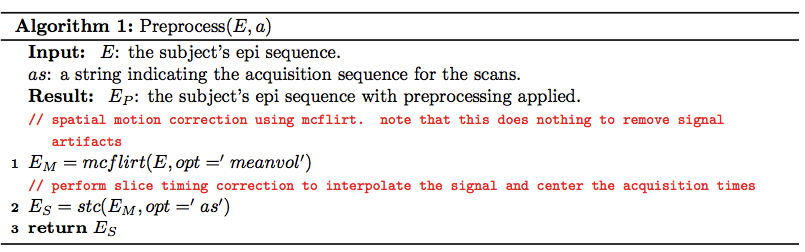FNGS effectively Motion Corrects Functional volume
- Jaccard Index for CPAC and FNGS between all permutations of motion-corrected volumes 0:20:maxtimepoint
FNGS Registers using default EPIreg with better initialization
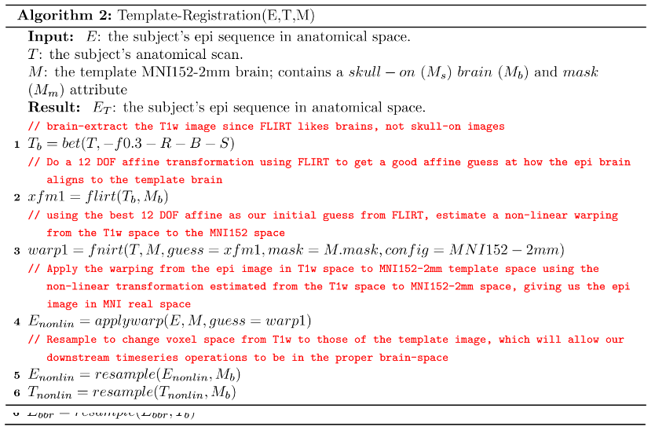Custom initialization prevents overscaling of epireg
epireg only: $.68$ with trans/local opt: $.76$
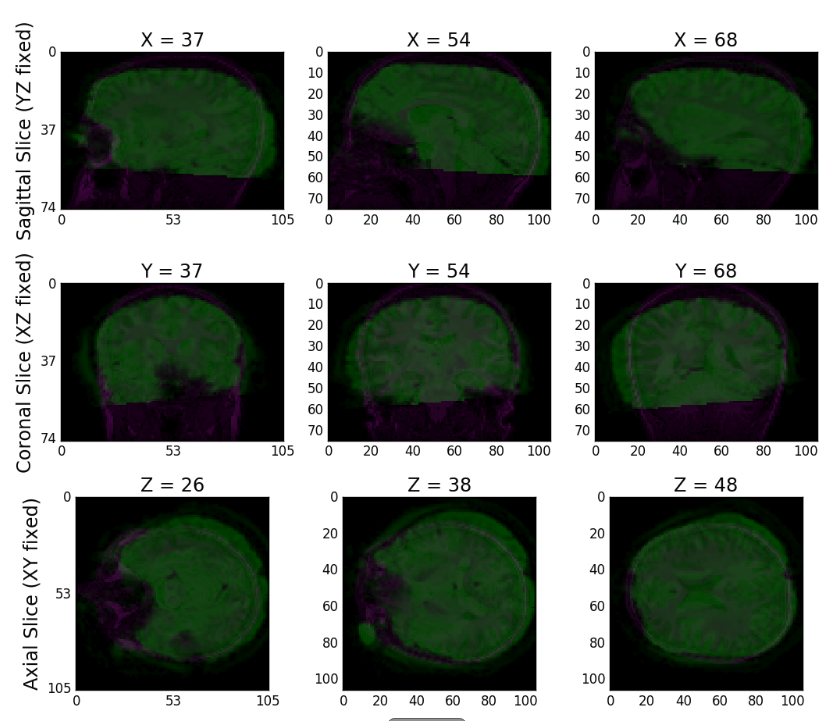
Performing Self Registration with Better Initialization minorly improves registration scoring and discriminability
- BNU1
- discriminability improves from .9253 to .9275
- Registration scoring improves from .8012 to .8024
- HNU1
- discriminability score improves from .9500 to .9573
- Average registration scoring improves from .809 to .816
FNGS Registers to Template using MNI152 config files
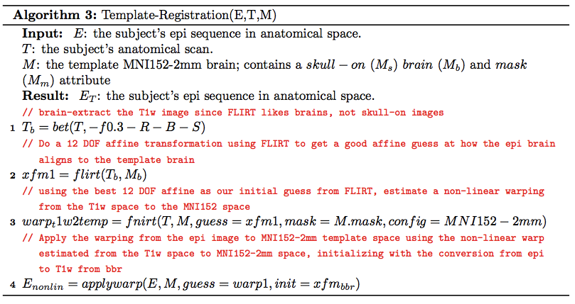FNGS effectively aligns functional and anatomical images
- Jaccard Index for CPAC and FNGS between s0 functional and anatomical template
FNGS: $.86$ CPAC: $.86$
 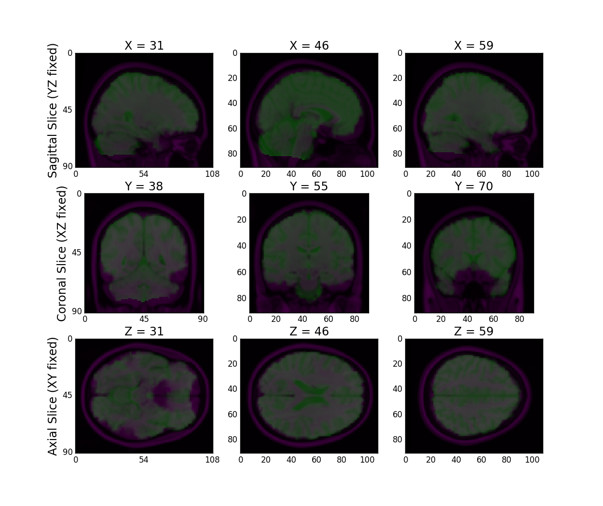
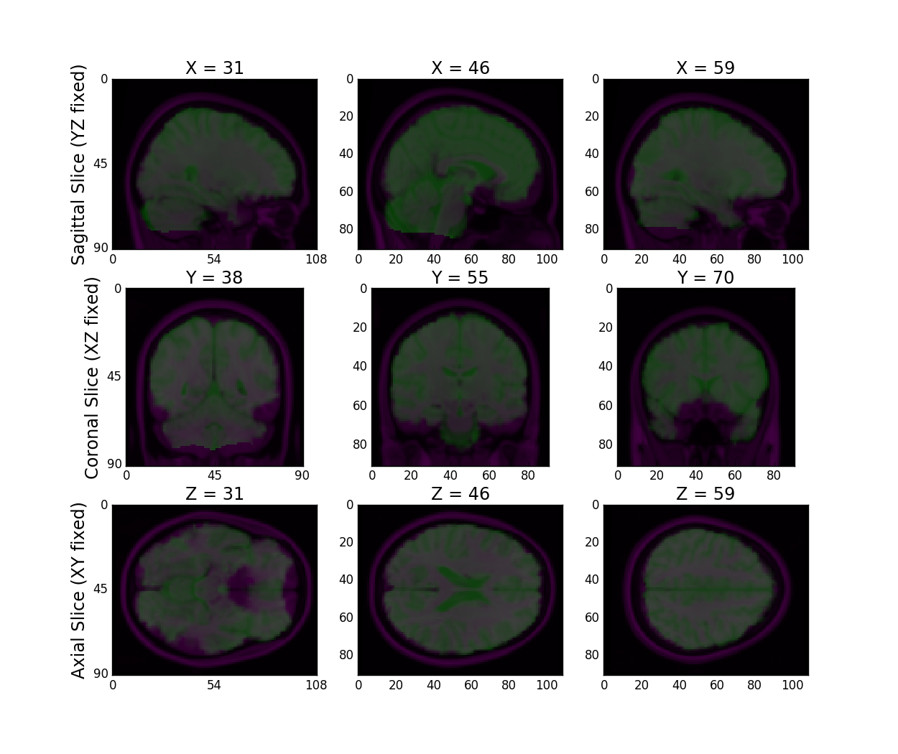
FNGS Registration Effectively Transforms our EPI Inputs to the Template Space
- BNU1
- Registration score average of .861
- HNU1
- Registration Score average of .853
FNGS performs nuisance correction using GLM and hp-filtering
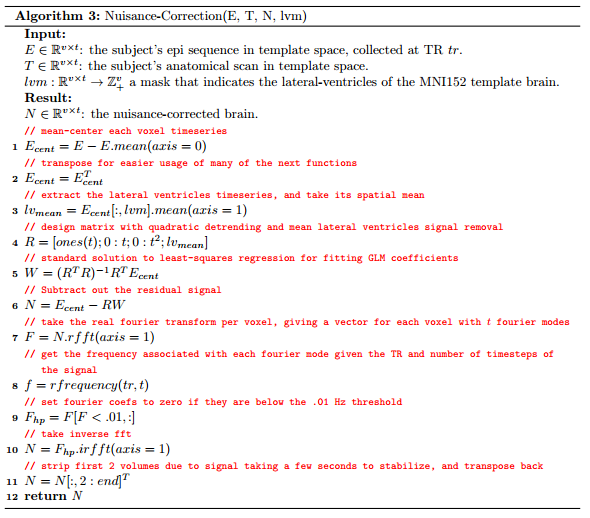FNGS extracts a quadratic with the mean CSF signal removed
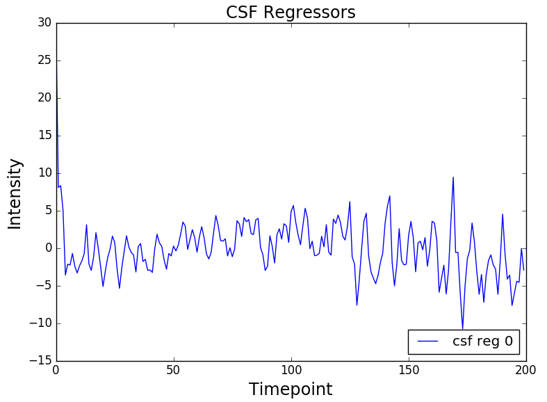
FNGS highpass filters low-frequency drift
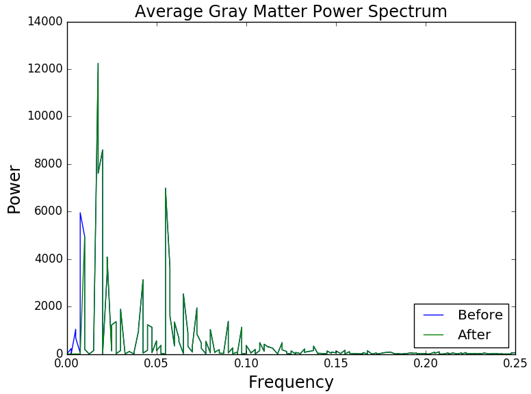 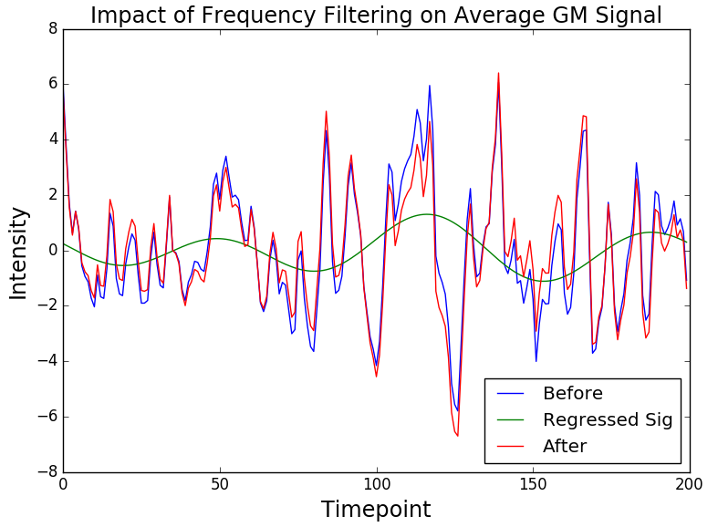FNGS extracts connectomes using spatial parcellation maps
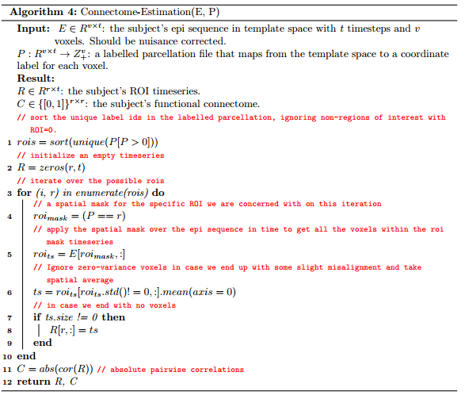aCompCor de-correlates fMRI timeseries
- aCompCor (CPAC pipeline) performs similar to Global Signal Regression in that it impacts the overall correlations
FNGS Achieves competitive discriminability scores to CPAC
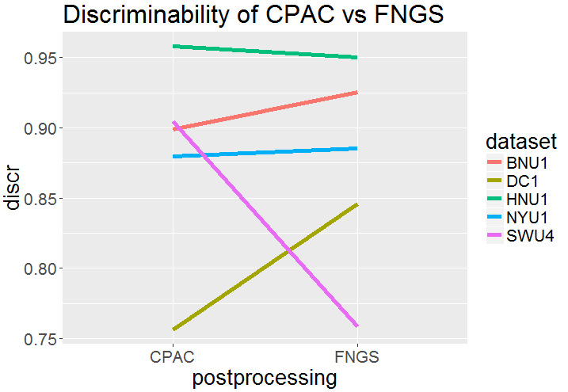- difference is accounted for by friston 24 parameter model + compcor for SWU4 dataset
Performance Comparison (average of 5 subs, except for fmriprep)
| Metric | FNGS | CPAC | fmriprep |
|---|---|---|---|
| time (s) | 1250 | 1600 | 40000 |
| $RAM_{mx}$ (GB) | 6.5 | 4.0 | 15.1 |
| $RAM_{avg}$ (GB) | 1.6 | 1.0 | 3.6 |
| $CPU_{mx}$ (threads) | 1 | 2 | 4 |
| $CPU_{avg}$ (threads) | .995 | 1.33 | 3.81 |
| $Disk$ (GB) | 4.8 | 5.6 | 12.1 |
Eric provides graphs/qa for greg to have fun with
Use-Cases
| Case | FNGS | CPAC | fmriprep |
|---|---|---|---|
| Resolution | 2 mm | 2, 3, 4 mm | 1 mm |
| QA | glass box | black box | glass box |
| pipeline type | end-to-end | end-to-end | registration only |
| workstation | local, EC2, Batch | local, cluster, EC2 | local |
| compute requirements | light | light | heavy |
Next steps for Registration
- Pipeline is 10 float-multiplications in total, each introducing error
- 2x preprocessing: motion correction and slice-timing correction
- 5x registration: 3xsreg (flirt, epireg, resample), 2xtreg (fnirt resample)
- 3x nuisance: recenter, GLM, fft
- Can reduce to 2x registration multiplies by daisy chaining transforms instead of applying constantly
- Will improve memory usage as well: application of a transform is the memory intensive part
Next steps for nuisance correction
- Avoid CompCor: hard to know exactly what it is doing on a per-subject basis
- some people use tCompCor (ANTs, Neuroconductor), others use aCompCor (CPAC)
- many hyperparams
- Need to extensively investigate before wholesomely including or excluding, as it has a PROFOUND impact on the resulting signal
- Friston 24-parameter model
Timeline to Improve
- Improve registration in spare time over the next 4 weeks
- 20 examples of quality control showing changes are robust
- 5 datasets aggregated Jaccard Index scores and discriminability before/after
- Improve nuisance correction after we have a good model for wSSG (next semester?)
- Look at adding (wm-PCA, Friston-24 param) or (wm-mean, Friston-24 param) or (Friston-24 param) to what we have
- Show how wSSG could be used in conjunction with discriminability to improve a pipeline for task-fMRI